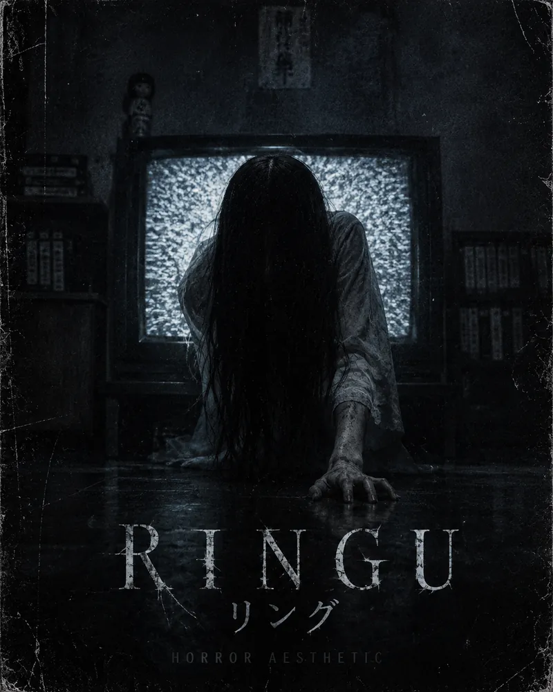
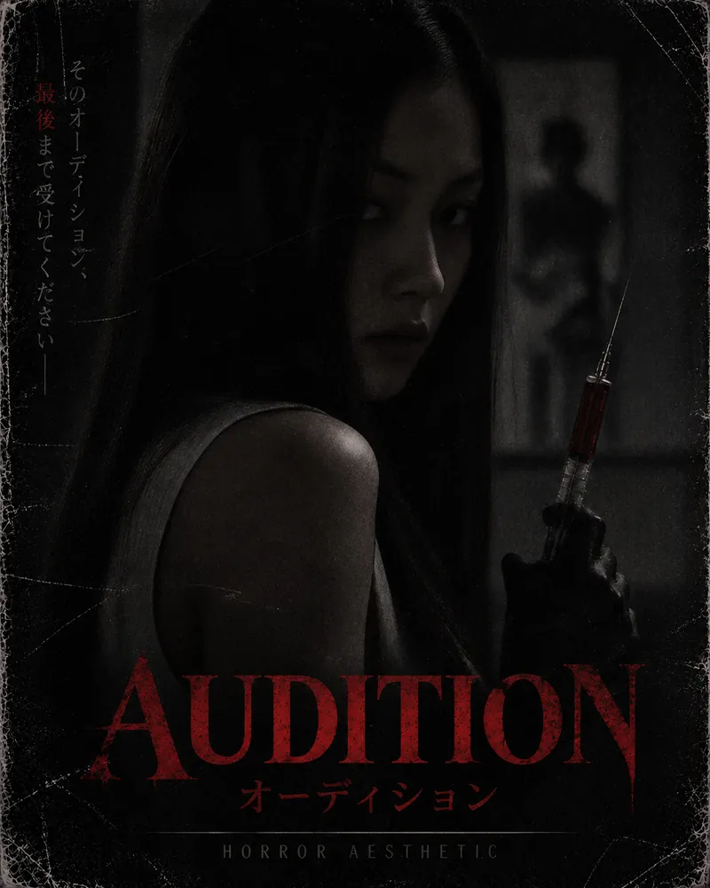

Ringu
Проклятие, которое передаётся через изображение.
Японский хоррор — это не только призраки. Это медленный страх, пустые пространства, городские легенды и ощущение, что нечто чужое уже находится рядом.

Проклятие, которое передаётся через изображение.

Дом, в котором ужас становится наследством.

Народные истории о призраках и потустороннем.

Медленное превращение романтической иллюзии в кошмар.